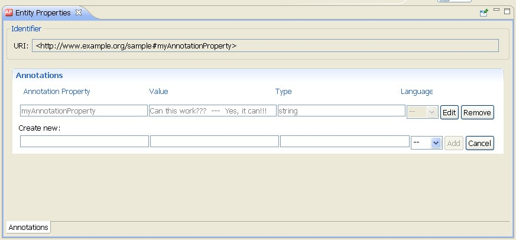

Annotation Properties
OWL allows classes, properties, individuals, and the ontology header to be annotated with useful information such as
labels, comments, creation date, author, or references to web pages. An OWL annotation simply associates property-value
pairs for resources of the ontology or the entire ontology itself. However, this information is not really part of the
semantics of the ontology and will thus be ignored by most reasoning engines.
The selection of meaningful names and the use of annotations is especially of importance if the ontology is to be
reused by someone else. You can enter annotations when you first create a resource or when you modify it later on.

Five annotation properties are predefined by OWL:
- versionInfo. An owl:versionInfo statement is intended to provide
hooks for version control systems working with ontologies.
- label. An rdfs:label statement supports a natural language label for the resource.
- comment. An rdfs:comment statement supports a natural language comment about
a resource for future readers to see.
- seeAlso. An rdfs:seeAlso statement provides a way to specify the web
location of supplementary information about the resource.
- isDefinedBy An rdfs:isDefinedBy statement provides a link to the
source of information about the resource.
For user-defined annotation properties, please keep the following constraints in mind:
- At least in OWL DL, object properties, datatype properties, annotation properties and ontology properties must be mutually
disjoint. For that reason, a property cannot be at the same time a datatype property and an annotation property. Note, however,
that OWL Full does not put any constraints on annotations in an ontology.
- Annotation properties must not be used in property axioms. Thus, in OWL DL one cannot define subproperties or domain/range
constraints for annotation properties.
- The object of an annotation property must be either a data literal, a URI reference, or an individual.
For instructions on how to create an annotation property, see Create an Annotation Property.
Online References
Further information is available at the following Web sites: